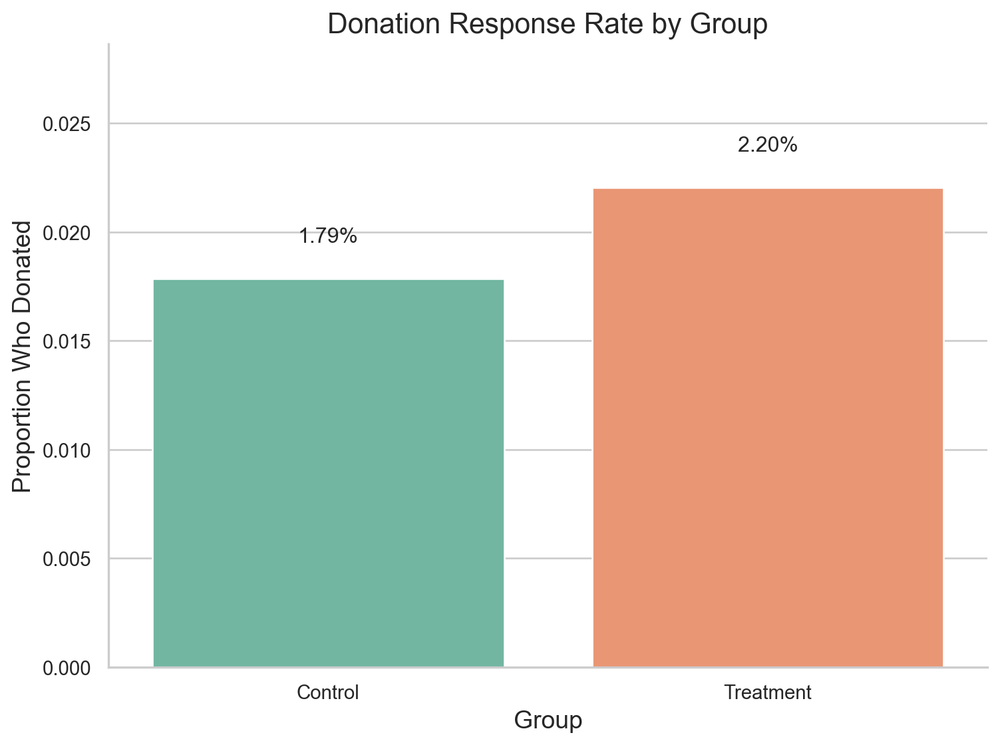
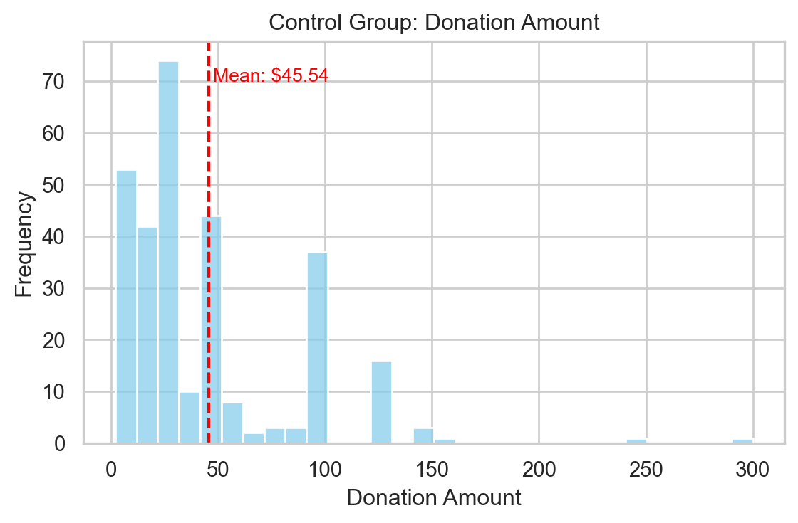
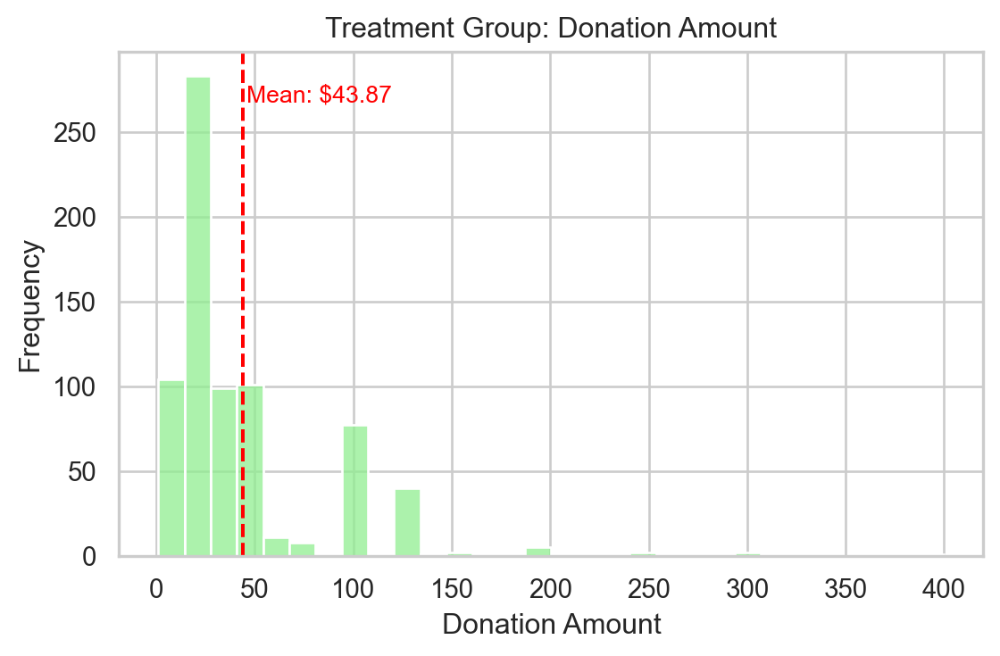
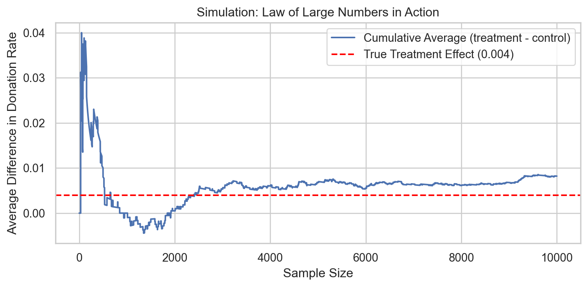
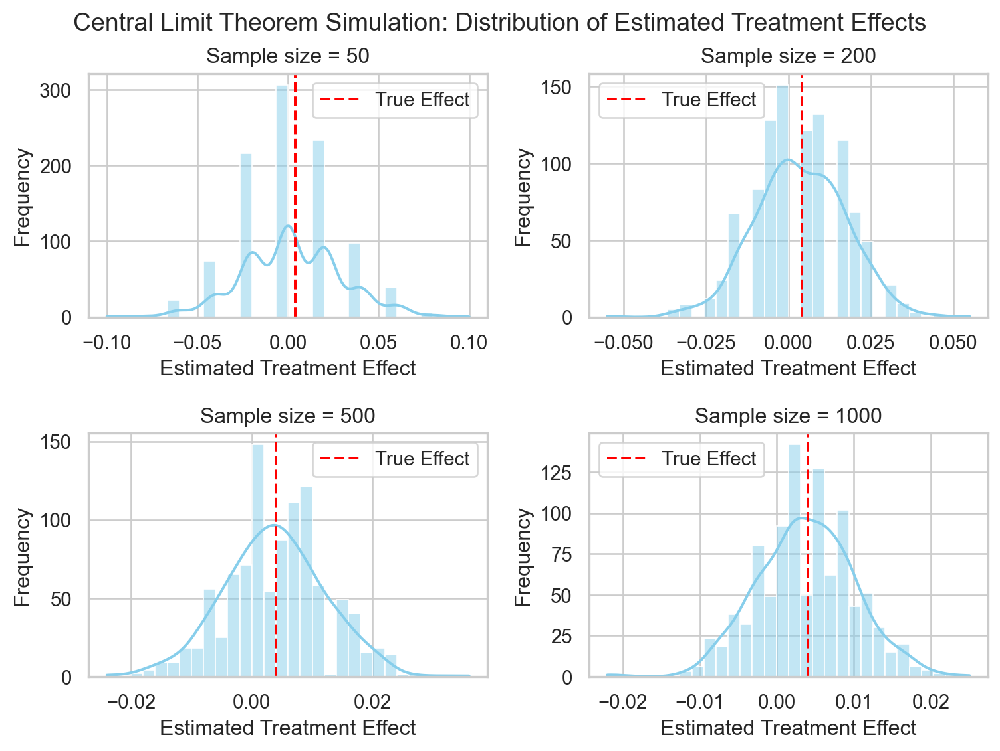

import pandas as pd
df = pd.read_stata("/Users/kris/Desktop/2025WORK/quarto_website/files/karlan_list_2007.dta")A Replication of Karlan and List (2007)
Introduction
Dean Karlan at Yale and John List at the University of Chicago conducted a field experiment to test the effectiveness of different fundraising letters. They sent out 50,000 fundraising letters to potential donors, randomly assigning each letter to one of three treatments: a standard letter, a matching grant letter, or a challenge grant letter. They published the results of this experiment in the American Economic Review in 2007. The article and supporting data are available from the AEA website and from Innovations for Poverty Action as part of Harvard’s Dataverse.
The experiment was conducted through a direct mail campaign by a liberal nonprofit organization in the United States. A total of 50,083 prior donors were randomly assigned to one of two main groups: a control group, which received a standard solicitation letter, and a treatment group, which received a matching grant offer.
Within the treatment group, participants were further randomized into subgroups with different matching ratios ($1:$1, $2:$1, or $3:$1), maximum matching amounts ($25,000, $50,000, $100,000, or unstated), and suggested donation levels (based on their previous giving history). Each donor received a four-page letter with content identical across groups, except for the inclusion or absence of matching grant language.
The goal of the experiment was to examine how changes in the price of giving (induced by the matching offers) affected the likelihood and amount of donations. The large sample size and real-world context made this a high-powered natural field experiment.
This project seeks to replicate their results.
Data
Description
df.shape(50083, 51)The dataset contains 50,083 observations and 51 variables, each representing a past donor who received a fundraising letter as part of a randomized field experiment. The data were collected to study how matching grants influence charitable giving behavior.
df.describe()| treatment | control | ratio2 | ratio3 | size25 | size50 | size100 | sizeno | askd1 | askd2 | ... | redcty | bluecty | pwhite | pblack | page18_39 | ave_hh_sz | median_hhincome | powner | psch_atlstba | pop_propurban | |
|---|---|---|---|---|---|---|---|---|---|---|---|---|---|---|---|---|---|---|---|---|---|
| count | 50083.000000 | 50083.000000 | 50083.000000 | 50083.000000 | 50083.000000 | 50083.000000 | 50083.000000 | 50083.000000 | 50083.000000 | 50083.000000 | ... | 49978.000000 | 49978.000000 | 48217.000000 | 48047.000000 | 48217.000000 | 48221.000000 | 48209.000000 | 48214.000000 | 48215.000000 | 48217.000000 |
| mean | 0.666813 | 0.333187 | 0.222311 | 0.222211 | 0.166723 | 0.166623 | 0.166723 | 0.166743 | 0.222311 | 0.222291 | ... | 0.510245 | 0.488715 | 0.819599 | 0.086710 | 0.321694 | 2.429012 | 54815.700533 | 0.669418 | 0.391661 | 0.871968 |
| std | 0.471357 | 0.471357 | 0.415803 | 0.415736 | 0.372732 | 0.372643 | 0.372732 | 0.372750 | 0.415803 | 0.415790 | ... | 0.499900 | 0.499878 | 0.168561 | 0.135868 | 0.103039 | 0.378115 | 22027.316665 | 0.193405 | 0.186599 | 0.258654 |
| min | 0.000000 | 0.000000 | 0.000000 | 0.000000 | 0.000000 | 0.000000 | 0.000000 | 0.000000 | 0.000000 | 0.000000 | ... | 0.000000 | 0.000000 | 0.009418 | 0.000000 | 0.000000 | 0.000000 | 5000.000000 | 0.000000 | 0.000000 | 0.000000 |
| 25% | 0.000000 | 0.000000 | 0.000000 | 0.000000 | 0.000000 | 0.000000 | 0.000000 | 0.000000 | 0.000000 | 0.000000 | ... | 0.000000 | 0.000000 | 0.755845 | 0.014729 | 0.258311 | 2.210000 | 39181.000000 | 0.560222 | 0.235647 | 0.884929 |
| 50% | 1.000000 | 0.000000 | 0.000000 | 0.000000 | 0.000000 | 0.000000 | 0.000000 | 0.000000 | 0.000000 | 0.000000 | ... | 1.000000 | 0.000000 | 0.872797 | 0.036554 | 0.305534 | 2.440000 | 50673.000000 | 0.712296 | 0.373744 | 1.000000 |
| 75% | 1.000000 | 1.000000 | 0.000000 | 0.000000 | 0.000000 | 0.000000 | 0.000000 | 0.000000 | 0.000000 | 0.000000 | ... | 1.000000 | 1.000000 | 0.938827 | 0.090882 | 0.369132 | 2.660000 | 66005.000000 | 0.816798 | 0.530036 | 1.000000 |
| max | 1.000000 | 1.000000 | 1.000000 | 1.000000 | 1.000000 | 1.000000 | 1.000000 | 1.000000 | 1.000000 | 1.000000 | ... | 1.000000 | 1.000000 | 1.000000 | 0.989622 | 0.997544 | 5.270000 | 200001.000000 | 1.000000 | 1.000000 | 1.000000 |
8 rows × 48 columns
df['treatment'].value_counts() treatment
1 33396
0 16687
Name: count, dtype: int64Summary statistics suggest most variables are binary or categorical indicators. Several variables such as cases, nonlit, and couple contain some missing values, which should be considered during modeling. The average suggested donation ranges widely, with variables like ask1 and askd1 showing values between 0 and 1 (indicating binary splits or quantiles).
Overall, the data are rich in both experimental variation and individual-level covariates, suitable for analyzing treatment effects through regression and stratified comparisons.
Balance Test
As an ad hoc test of the randomization mechanism, I provide a series of tests that compare aspects of the treatment and control groups to assess whether they are statistically significantly different from one another.
To verify that the randomization was successful, I perform a balance test on several pre-treatment variables. Specifically, we compare the following variables across the treatment and control groups: - mrm2: months since last donation - freq: number of prior donations - hpa: highest previous contribution - female: gender indicator
I conduct both t-tests and OLS regressions for each variable to assess statistical significance and confirm consistency across methods.
According to the test result, none of the variables show statistically significant differences between treatment and control groups at the 5% level. The lowest p-value appears in the case of female (p ≈ 0.079), which is marginally significant under a 10% threshold, but still within an acceptable range for randomization.
These results confirm that the groups are generally well balanced across observed characteristics, supporting the internal validity of the experimental design. Importantly, our results align closely with those reported in Table 1 of Karlan and List (2007), which also finds no significant imbalance on these and other pre-treatment covariates.
ttest_df = pd.DataFrame(ttest_results, columns=["Variable", "T-statistic", "P-value"])
reg_df = pd.DataFrame(reg_results, columns=["Variable", "Coeff (Regression)", "P-value"])
ttest_df.merge(reg_df, on="Variable")| Variable | T-statistic | P-value_x | Coeff (Regression) | P-value_y | |
|---|---|---|---|---|---|
| 0 | mrm2 | 0.119532 | 0.904855 | 0.013686 | 0.904886 |
| 1 | freq | -0.110845 | 0.911740 | -0.011979 | 0.911702 |
| 2 | hpa | 0.970427 | 0.331840 | 0.637075 | 0.345099 |
| 3 | female | -1.753513 | 0.079523 | -0.007547 | 0.078691 |
Experimental Results
Charitable Contribution Made
First, I analyze whether matched donations lead to an increased response rate of making a donation.
To examine whether matching grants increase the likelihood of donating, I compare the donation response rate between the treatment and control groups. The plot below shows the proportion of individuals who made a donation in each group.
response_rate = df.groupby("treatment")["gave"].mean().reset_index()
response_rate["Group"] = response_rate["treatment"].map({0: "Control", 1: "Treatment"})
sns.set(style="whitegrid")
plt.figure(figsize=(8, 6))
ax = sns.barplot(data=response_rate, x="Group", y="gave", palette="Set2")
for i, val in enumerate(response_rate["gave"]):
ax.text(i, val + 0.0015, f"{val:.2%}", ha='center', va='bottom', fontsize=12)
plt.title("Donation Response Rate by Group", fontsize=16)
plt.xlabel("Group", fontsize=14)
plt.ylabel("Proportion Who Donated", fontsize=14)
plt.ylim(0, response_rate["gave"].max() * 1.3)
sns.despine()
plt.tight_layout()
plt.show()
The figure above compares the donation response rate between the treatment and control groups. The treatment group, which received a matching grant offer, had a donation rate of 2.20%, while the control group had a rate of 1.79%.
Although the absolute difference in response rates appears modest, it represents a relative increase of over 22%, suggesting that the presence of a matching grant can meaningfully boost the likelihood of charitable giving. This provides early visual evidence supporting the hypothesis that price incentives (in the form of matching) increase donation behavior.
We now formally test whether individuals in the treatment group were significantly more likely to donate than those in the control group.
result_table| Coefficient | P-value | 95% CI Lower | 95% CI Upper | |
|---|---|---|---|---|
| Intercept | 0.0179 | 0.0000 | 0.0157 | 0.0200 |
| treatment | 0.0042 | 0.0019 | 0.0015 | 0.0068 |
The regression model estimates the effect of being in the treatment group on the probability of making a donation. According to the results, individuals who received the matching grant offer were 0.42 percentage points more likely to donate compared to those in the control group. This effect is statistically significant (p = 0.0019), with a 95% confidence interval ranging from 0.15 to 0.68 percentage points.
Although the effect may appear small in absolute terms, it is meaningful given the low baseline response rate. This suggests that simple behavioral nudges—such as informing donors that their contribution will be matched—can effectively increase participation in charitable giving.
This result reinforces the visual difference we observed earlier and aligns with the findings reported in Table 2a Panel A of Karlan and List (2007), confirming the positive impact of matching grants on donor behavior.
To complement the linear regression, we estimate a probit model for the binary outcome gave, with treatment as the only explanatory variable.
probit_result = pd.DataFrame({
"Coefficient": params.round(4),
"P-value": pvals.round(4),
"95% CI Lower": conf_int[0].round(4),
"95% CI Upper": conf_int[1].round(4)
})
probit_result| Coefficient | P-value | 95% CI Lower | 95% CI Upper | |
|---|---|---|---|---|
| Intercept | -2.1001 | 0.0000 | -2.1458 | -2.0544 |
| treatment | 0.0868 | 0.0019 | 0.0321 | 0.1414 |
This model confirms that people who were told their donation would be matched were more likely to give. Even though the number looks small, the effect is statistically real—not due to chance. In simple terms, a matching grant makes people feel like their donation “counts more,” and that encourages them to act.
Note: While our linear regression result closely matches Table 3 Column 1 in Karlan and List (2007), our probit coefficient does not. This may be due to differences in specification, such as use of marginal effects or inclusion of additional covariates in the published model.
Differences between Match Rates
Next, I assess the effectiveness of different sizes of matched donations on the response rate.
To examine whether higher match ratios increase donation likelihood, we perform a series of t-tests within the treatment group.
We tested whether different match ratios (1:1, 2:1, and 3:1) led to different donation rates using a series of t-tests within the treatment group. As shown in the table above, none of the comparisons yielded statistically significant differences, with all p-values well above the 0.05 threshold.
This suggests that increasing the match size beyond 1:1 did not further motivate people to donate, even though the higher ratios were framed as more generous. The results support the authors’ conclusion on page 8 of Karlan and List (2007), which states that higher match ratios do not significantly improve donation response.
In fact, the p-value comparing 2:1 to 3:1 is 0.96, implying that those two offers performed nearly identically in terms of response rate. These findings reinforce the idea that it is the presence of a match—not its magnitude—that drives behavior.
pd.DataFrame({
"Comparison": ["1:1 vs 2:1", "1:1 vs 3:1", "2:1 vs 3:1"],
"T-stat": [t_1_2.statistic, t_1_3.statistic, t_2_3.statistic],
"P-value": [t_1_2.pvalue, t_1_3.pvalue, t_2_3.pvalue]
}).round(4)| Comparison | T-stat | P-value | |
|---|---|---|---|
| 0 | 1:1 vs 2:1 | -0.9650 | 0.3345 |
| 1 | 1:1 vs 3:1 | -1.0150 | 0.3101 |
| 2 | 2:1 vs 3:1 | -0.0501 | 0.9600 |
To complement the t-test analysis, we regress the donation outcome gave on the categorical variable ratio among treatment group members. The regression uses 1:1 as the reference group, and compares 2:1 and 3:1 match offers against it.
model.summary2().tables[1].round(4)| Coef. | Std.Err. | t | P>|t| | [0.025 | 0.975] | |
|---|---|---|---|---|---|---|
| Intercept | 0.0207 | 0.0014 | 14.9122 | 0.0000 | 0.0180 | 0.0235 |
| ratio2 | 0.0019 | 0.0020 | 0.9576 | 0.3383 | -0.0020 | 0.0057 |
| ratio3 | 0.0020 | 0.0020 | 1.0083 | 0.3133 | -0.0019 | 0.0058 |
As shown in the table above, neither ratio2 nor ratio3 produces a statistically significant effect on donation response. Both coefficients are small (0.0019 and 0.0020) and have p-values greater than 0.3, indicating no meaningful difference relative to the 1:1 match.
These findings reinforce our earlier t-test results and strongly support the authors’ claim in Karlan and List (2007): while the presence of a match increases donations, the size of the match (1:1 vs 2:1 vs 3:1) does not matter.
From the regression coefficients, we estimate the average donation response rate for each match ratio as follows:
- 1:1 match: 2.07% (intercept)
- 2:1 match: 2.26% (0.0207 + 0.0019)
- 3:1 match: 2.27% (0.0207 + 0.0020)
The estimated difference between the 2:1 and 1:1 match ratios is just 0.19 percentage points, and the difference between 3:1 and 2:1 is only 0.01 percentage points. Neither difference is statistically significant (p > 0.3 in both cases).
These small, non-significant differences reinforce the finding that increasing the match ratio does not meaningfully affect donor behavior. The results suggest that donors are responsive to the idea of matching, but not particularly sensitive to how large the match offer is.
Size of Charitable Contribution
In this subsection, I analyze the effect of the size of matched donation on the size of the charitable contribution
We restrict the analysis to individuals who made a donation and regress the donation amount on the treatment indicator. This allows us to assess whether the matching grant affects how much people give, conditional on giving.
The regression result shows that donors in the treatment group gave, on average, $1.67 less than those in the control group. However, this difference is not statistically significant (p = 0.56).
Importantly, the treatment coefficient does not have a clear causal interpretation in this context. This is because we are conditioning on post-treatment behavior (gave == 1), which is itself affected by the treatment. As a result, this analysis describes patterns among donors, but it does not estimate the total causal effect of treatment on donation amount.
from scipy.stats import ttest_ind
import statsmodels.formula.api as smf
donated = df[df["gave"] == 1]
treat_amt = donated[donated["treatment"] == 1]["amount"]
control_amt = donated[donated["treatment"] == 0]["amount"]
t_stat, p_val = ttest_ind(treat_amt, control_amt, equal_var=False)
model = smf.ols("amount ~ treatment", data=donated).fit()
model.summary2().tables[1].round(4)| Coef. | Std.Err. | t | P>|t| | [0.025 | 0.975] | |
|---|---|---|---|---|---|---|
| Intercept | 45.5403 | 2.4234 | 18.7921 | 0.0000 | 40.7850 | 50.2956 |
| treatment | -1.6684 | 2.8724 | -0.5808 | 0.5615 | -7.3048 | 3.9680 |
The following histograms display the distribution of donation amounts among individuals who donated, separately for the treatment and control groups. In both cases, donations are right-skewed, with most contributions under $100.
The red vertical line represents the average donation in each group. As shown, the treatment group donated slightly less on average ($43.87) than the control group ($45.54), but the difference is small and visually negligible.
plt.figure(figsize=(6, 4))
sns.histplot(control_amt, bins=30, color='skyblue')
plt.axvline(avg_control, color='red', linestyle='--')
plt.title("Control Group: Donation Amount")
plt.xlabel("Donation Amount")
plt.ylabel("Frequency")
plt.text(avg_control + 2, plt.ylim()[1]*0.9,
f"Mean: ${avg_control:.2f}", color="red", fontsize=10)
plt.tight_layout()
plt.show()
plt.figure(figsize=(6, 4))
sns.histplot(treat_amt, bins=30, color='lightgreen')
plt.axvline(avg_treat, color='red', linestyle='--')
plt.title("Treatment Group: Donation Amount")
plt.xlabel("Donation Amount")
plt.ylabel("Frequency")
plt.text(avg_treat + 2, plt.ylim()[1]*0.9,
f"Mean: ${avg_treat:.2f}", color="red", fontsize=10)
plt.tight_layout()
plt.show()
These plots visually reinforce the regression result: matching grants encourage more people to donate, but do not affect how much they give once they’ve decided to donate.
Simulation Experiment
As a reminder of how the t-statistic “works,” in this section I use simulation to demonstrate the Law of Large Numbers and the Central Limit Theorem.
Suppose the true distribution of respondents who do not get a charitable donation match is Bernoulli with probability p=0.018 that a donation is made.
Further suppose that the true distribution of respondents who do get a charitable donation match of any size is Bernoulli with probability p=0.022 that a donation is made.
Law of Large Numbers
The plot following demonstrates the Law of Large Numbers using a simulated donation experiment. We assume that donation rates are 1.8% in the control group and 2.2% in the treatment group. By simulating 10,000 draws from each group, we compute and plot the cumulative average of the differences in donation outcomes.
As shown, the cumulative difference is highly volatile at the beginning, fluctuating wildly due to small sample sizes. However, as more observations are included, the average stabilizes and converges toward the true treatment effect of 0.004, marked by the red dashed line.
This illustrates a fundamental principle in statistics: with larger sample sizes, the sample average tends to the true population mean. It also explains why we can rely on the t-test in large experiments—because the randomness “averages out.”
import numpy as np
import matplotlib.pyplot as plt
np.random.seed(42)
n = 10000
control = np.random.binomial(1, 0.018, n)
treatment = np.random.binomial(1, 0.022, n)
diff = treatment - control
cumulative_avg = np.cumsum(diff) / np.arange(1, n+1)
plt.figure(figsize=(8, 4))
plt.plot(cumulative_avg, label="Cumulative Average (treatment - control)")
plt.axhline(y=0.004, color="red", linestyle="--", label="True Treatment Effect (0.004)")
plt.title("Simulation: Law of Large Numbers in Action")
plt.xlabel("Sample Size")
plt.ylabel("Average Difference in Donation Rate")
plt.legend()
plt.tight_layout()
plt.show()
Central Limit Theorem
These four histograms illustrate the Central Limit Theorem using simulated experiments at different sample sizes. For each sample size (50, 200, 500, and 1000), we simulate 1000 experiments by drawing from two Bernoulli distributions (with probabilities 0.018 and 0.022), compute the difference in means, and plot the distribution of these differences.
As seen in the plots:
- With small samples (n = 50), the distribution is noisy and non-normal.
- As the sample size increases, the distribution becomes smoother, more symmetric, and centered around the true treatment effect (0.004), marked by the red dashed line.
- At n = 1000, the distribution closely resembles a normal curve, confirming the Central Limit Theorem in action.
This shows that even when the underlying data is binary, the average difference across repeated samples approaches a normal distribution as sample size grows. This is why t-tests are valid in large-sample experiments: the assumptions of approximate normality are satisfied.
import numpy as np
import matplotlib.pyplot as plt
import seaborn as sns
np.random.seed(42)
def simulate_differences(n, reps=1000):
diffs = []
for _ in range(reps):
t = np.random.binomial(1, 0.022, n).mean()
c = np.random.binomial(1, 0.018, n).mean()
diffs.append(t - c)
return np.array(diffs)
sample_sizes = [50, 200, 500, 1000]
fig, axes = plt.subplots(2, 2, figsize=(8, 6))
for i, n in enumerate(sample_sizes):
diffs = simulate_differences(n)
ax = axes[i//2, i%2]
sns.histplot(diffs, bins=30, kde=True, ax=ax, color="skyblue")
ax.set_title(f"Sample size = {n}")
ax.axvline(0.004, color='red', linestyle='--', label="True Effect")
ax.legend()
ax.set_xlabel("Estimated Treatment Effect")
ax.set_ylabel("Frequency")
plt.suptitle("Central Limit Theorem Simulation: Distribution of Estimated Treatment Effects", fontsize=14)
plt.tight_layout()
plt.subplots_adjust(top=0.90)
plt.show()
Conclusion
This A/B experiment evaluates whether offering a charitable donation match influences giving behavior. Our analysis reveals several key findings:
- Offering a matching grant increases the likelihood of donating. Individuals who received the matching offer were significantly more likely to contribute than those in the control group, with a response rate difference of approximately 0.42 percentage points.
- However, the size of the match (1:1 vs 2:1 vs 3:1) has no meaningful effect. Neither donation rates nor average donation amounts significantly varied across different match ratios. This suggests that the presence of a match matters more than its magnitude.
- Among those who did donate, the treatment had no effect on the amount donated. Matching grants seem to increase participation but not donation size.
Together, these results align with the findings of Karlan and List (2007), reinforcing the idea that psychological cues—such as telling donors their gift will be matched—can nudge people into giving, but once they’re engaged, their level of generosity is guided by other personal factors.
This study highlights how behavioral interventions can have measurable effects even when monetary incentives are small, and how careful A/B testing can quantify such effects in real-world settings.